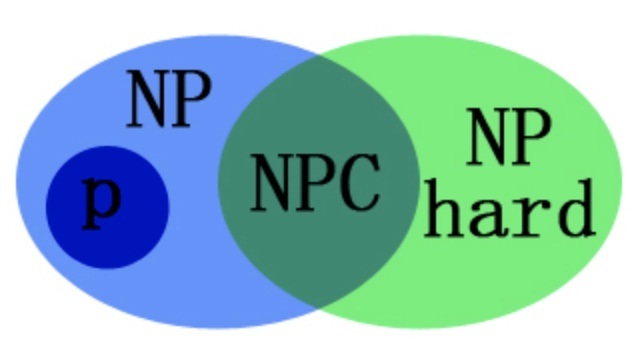
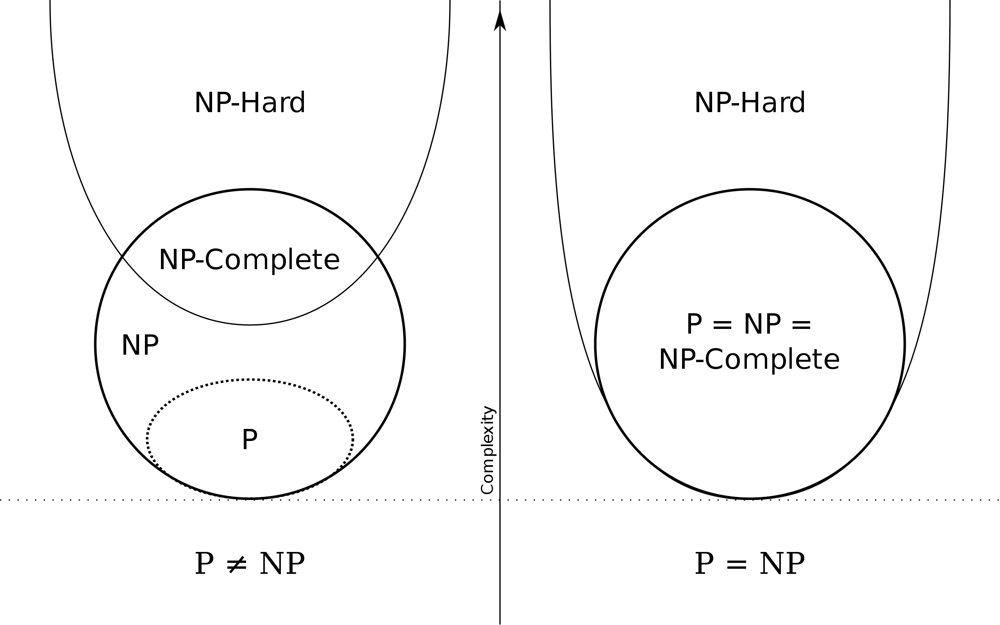
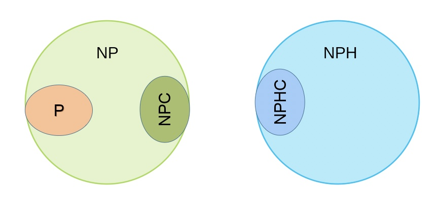

N, NP, NPC and NPH Problems
N, NP, NPC and NPH Problems
1. P类问题
存在多项式时间算法的问题(P：polynominal，多项式)。
我们只在乎一个问题是否存在多项式算法，因为一个时间复杂度比多项式算法还要复杂的算法研究起来是没有任何实际意义的。
2. NP 类问题
能在多项式时间内验证一个解是否正确的问题(NP:Nondeterministic polynominal，非确定性多项式)。
P类问题是NP问题的子集，因为存在多项式时间解法的问题，总能在多项式时间内验证他。
3. P =？NP
是否 NP类问题=P类问题？即，是否所有能在多项式时间内验证得出正确解的问题，都是具有多项式时间算法的问题呢？
要是解决了这个问题，那所有的NP问题都可以通过计算机来解决.
2. A Personal View of AverageCase Complexity
4. NPC类问题
对于同一类的所有的NP类问题，若他们都可以在多项式时间内约化成最难的一个NP类问题（我们直观的认为，被约化成的问题应具有比前一个问题更复杂的时间复杂度），当我们针对这个时间复杂度最高的超级NP问题要是能找到他的多项式时间算法的话，那就等于变向的证明了其下的所有问题都是存在多项式算法的，即NP=P；这一类问题就是 NPC 类问题。
NPC类问题（Nondeterminism Polynomial complete）：存在这样一个NP问题，所有的NP问题都可以约化成它（只要解决了这个问题，那么所有的NP问题都解决了）。
其定义要满足2个条件：
- 它得是一个NP问题；
- 所有的NP问题都可以约化到它。
在计算复杂度理论的世界中，NPC问题，又称NP完全问题或NP完备问题，是NP（非决定性多项式时间）中最难的决定性问题。因此NP完备问题应该是最不可能被化简为P（多项式时间可决定）的决定性问题的集合。许多人推测若任何NPC问题得到多项式时间的解法，那此解法就可应用在所有NP问题上。
想要证明一个问题是NPC，最简单的方法是先证明它属于NP，然后将某个已知是NPC的问题变换成它(多项式时间内变换)。因此在学习变换技巧前，先熟悉各种不同类型的NPC问题是很有用的。下表列出了一些以决定性命题表示的著名NPC问题：
- 布尔可满足性问题：（Boolean satisfiability problem）（SAT）
- N-puzzle问题（华容道问题）:（N-puzzle）
- 背包问题：（Knapsack problem）
- 汉弥尔顿循环问题：（Hamiltonian cycle problem）
- 旅行推销员问题：（Traveling salesman problem）
- 子图同构问题：（Subgraph isomorphism problem）
- 子集合加总问题：（Subset sum problem）
- 分团问题：（Clique problem）
- 顶点涵盖问题：（Vertex cover problem）
- 独立顶点集问题：（Independent set problem）
- 图着色问题（参见四色定理）:（Graph coloring problem）
更多NPC问题的例子，请见NP-complete问题列表（英文版）。
通常一个P与NPC问题的叙述看起来只有一些不同的地方，例如3SAT问题（SAT问题的限制版本）仍然是NPC问题，但更限制的2SAT问题则是个P问题（准确的说，是NL-complete问题），而条件较为宽松的MAX 2SAT问题却又成了NPC问题。决定一个图是否能被两色涂满是P问题，但三色图是NPC问题，即使我们将它限制在平面图上。决定一个图有无循环或它是两分图很容易（在log空间等级），但是发现一个最大二分图或最大循环子图则是NPC。以一固定百分比来求郊游打包问题的最佳解可以在多项式时间解决，但是求最佳解是NPC。
5. NP难问题（NPH:NP-hard问题）：
NP-Hard问题是这样一种问题，它满足NPC问题定义的第二条但不一定要满足第一条,就是说，NP-Hard问题要比NPC问题的范围广，NP-Hard问题没有限定属于NP，即所有的NP问题都能约化到它，但是他不一定是一个NP问题；
NP-Hard问题同样难以找到多项式的算法，但它不列入我们的研究范围，因为它不一定是NP问题。即使NPC问题发现了多项式级的算法，NP-Hard问题有可能仍然无法得到多项式级的算法。事实上，由于NP-Hard放宽了限定条件，它将有可能比所有的NPC问题的时间复杂度更高从而更难以解决。
6. 各类问题的关系


- P 问题能找到多项式解法，能找到必然能在多项式时间内验证，所以 P ∈ NP;
- NPC问题是一类可以在多项式时间内进行约化的问题，它们之间存在一些相似性；并且 NPC 问题首先应该是 NP 问题，所以 NPC ∈ NP；但是它没有第三个条件，即约化成的 NP 问题是否有多项式解，即是不是 P 问题，它有可能约化成一个 P 问题，这样 NPC 问题集合就都有解了；它也可以约化成一个 NP 问题，暂时还没有找到多项式解，所以 NPC 集合也没有多项式解，但是可以在多项式时间内验证一个解是否正确；它还可以约化成一个 NP 问题，但是这个 NP 问题是 NPH 的（NP 问题中有一部分是 NPH 的），而NPH问题是既不能在多项式内求解也不能验证一个解是否正确的问题，所以相当于目前无解；
- NPH 问题是除了 NP 问题之外的问题，是既无法在多项式时间内求解也不能验证解正确性的问题，直观感觉似乎NPH应该与 NP 没有交集才对，实际上感觉上面图中的交集也不是很正确，因为它规定 NPC 问题必须是 NP 问题，而有些问题不是 NP 问题而是 NPH 的，但是它可以约化，所以这部分应该不再命名为 NPC，而是暂时命名为 NPHC,归属于 NPH 集合，并且 NP 和 NPH 集合互相独立开来；上图中的表示说明：NP 问题中有一部分是 NPH 问题，这对于两者的定义来说是矛盾的；

- P 都是 NP，NPC 也首先都是 NP；
- NP 不是 NPH，NPH 问题中有一部分可以进行约化（满足 NPC 定义的第二条），但是约化成的是 NPH 问题；
- 有一部分 NP 问题可以约化，但是约化成的是 NPH 问题，这种当前研究没有多大意义。